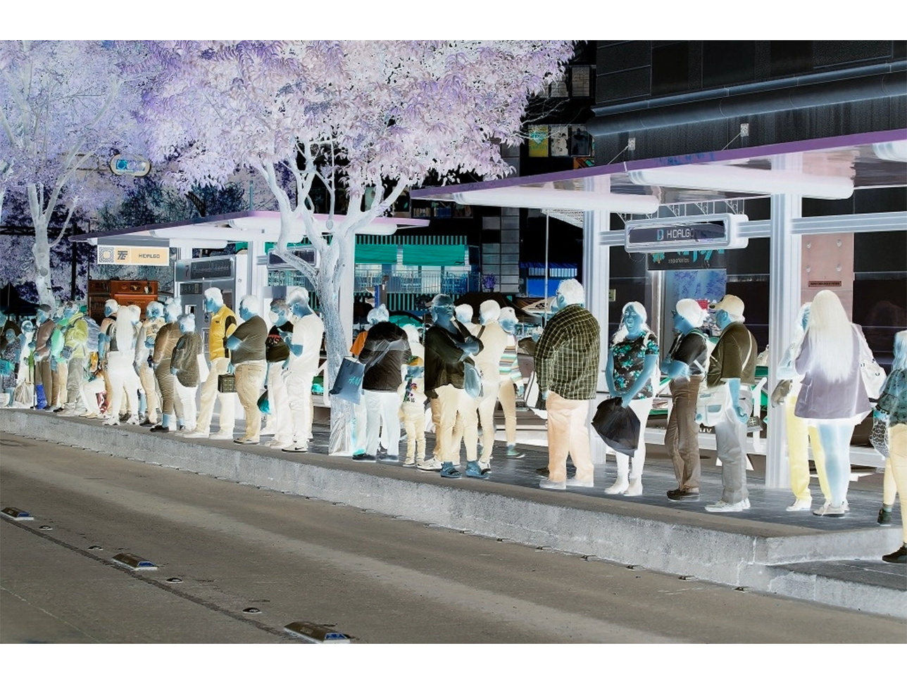

Conoce los tiempos
La gran mayoría de los viajes de la ciudad se realizan conectando dos o tres tramos de viaje en más de un sistema de transporte; éstos contemplan el uso de ECOBICI para realizar intercambios modales entre el STC Metro, Metrobús y Trolebús, o para acercarse a sus destinos intermedios o finales
Son varios los factores que generan ineficiencia en los traslados, la cual se refleja en un alto número de transferencias y falta de servicios expresos; por ello, las personas usuarias sufren importantes pérdidas de tiempo –se tiene registro de viajes con duración de hasta 2.5 hora –, lo cual convierte al servicio de transporte público en una opción poco atractiva
Además, es importante considerar que la mayoría de las personas usuarias del transporte público son familias de bajos ingresos, quienes destinan en promedio el 18%45 de sus ingresos a trasladarse.
